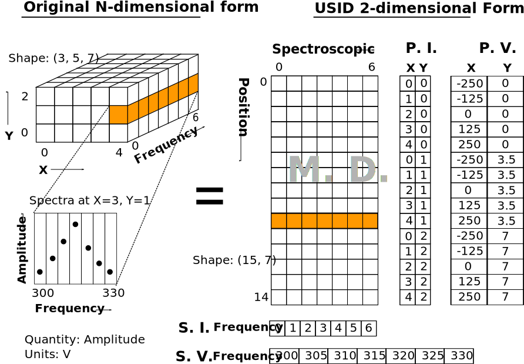

Data Schema¶
Suhas Somnath
8/8/2017
In this main document we describe how imaging and spectroscopy data can be structured in the Universal Spectroscopy and Imaging Data (USID) schema. We have a separate document on specifications that describes how this abstract data schema can be incorporated and used in hierarchical data format (HDF5) files
Alex Belianinonv and Stephen Jesse, conceived the central theme of USID while Suhas Somnath and Chris R. Smith developed subsequent versions and refinements of USID and developed the specifications for implementing USID in HDF5 files
Contents
Existing data schemas¶
No one really wants yet another data schema or file format in their lives. Like everyone else, we wanted to adopt a framework put together by other experts who had thought long and hard about the challenges. We explored the feasibility of several data models and file formats from within and beyond imaging and microscopy. However, in most cases, there were some important shortcomings which made it infeasible for us to adopt existing solutions.
Below, we list some of the many solutions we explored. In many cases, the data schema / model is tied very closely with the file format. In general, we observed two basic kinds of existing data models:
Text - Most of these are markup language based:
Binary
Image
OME-TIFF
Most of these models were designed rigidly around specific class of instruments, specific modalities, coordinate systems (Cartesian only with no option for polar coordinates etc.), or for specific scientific communities such as the climate research, X-ray microscopy, etc. We found models tied to plain-text-based file formats of data limiting, especially in the age of large multidimensional datasets. While most of the data models tied to binary file formats can certainly represent the vast majority of data, we found all of them lacking in one critically important area – none besides HMSA can represent large datasets without an N-dimensional form. Furthermore, most models also assume experimental variables would only be varied in a linearly increasing or decreasing manner for all dimensions. Such models would preclude the representation of those modalities where a variable was varied as a sine or a bipolar triangle. The closest and most general model we found was the HMSA. While compromising user-friendliness for ultimate generalization is acceptable, the vulnerability of this model is not – the potential separation or loss of the metadata file from the data file would render the dataset useless.
USID¶
Information in USID are stored in three main kinds of datasets:
Maindatasets that contain the raw measurements recorded from the instrument as well as results from processing or analysis routines applied to the dataMandatory
Ancillarydatasets that are necessary to explain themaindataExtradatasets store any other data that may be of value
In addition to datasets, the data schema is highly reliant on metadata that capture
smaller pieces but critical pieces of information such as the
quantity and units that describe every data point in the main dataset.
We acknowledge that this data schema is not trivial to understand at first glance but we are making every effort to make is simple to understand. If you ever find anything complicated or unclear, please write to us and we will improve our documentation.
Main Datasets¶
Regardless of origin, modality or complexity, imaging data (and most scientific data for that matter) have one thing in common:
The same measurement / operation is performed at each spatial position
The USID schema is based on this one simple ground-truth.
The data always has some spatial dimensions (X, Y, Z) and some
spectroscopic dimensions (time, frequency, intensity, wavelength,
temperature, cycle, voltage, etc.). In USID, the spatial
dimensions are collapsed onto a single dimension and the spectroscopic
dimensions are flattened into the second dimension. Thus, all data are
stored as two dimensional arrays. The data would be arranged in the same manner that
reflects the sequence in which the individual data points were collected. Examples below
will simplify this data-representation paradigm significantly.
In general, if a measurement of length P was recorded for each of N positions,
it would be structured as shown in the table below here the prefixes i correspond to
the positions and j for spectroscopic:
i0, j0 |
i0, j1 |
i0, j2 |
<..> |
i0, jP-2 |
i0, jP-1 |
i1, j0 |
i1, j1 |
i1, j2 |
<..> |
i1, jP-2 |
i1, jP-1 |
<……> |
<……> |
<……> |
<..> |
<……..> |
<……..> |
iN-2, j0 |
iN-2, j1 |
iN-2, j2 |
<..> |
iN-2, jP-2 |
iN-2, jP-1 |
iN-1, j0 |
iN-1, j1 |
iN-1, j2 |
<..> |
iN-1, jP-1 |
iN-1, jP-1 |
A notion of chronology is attached to both the position and spectroscopic axes. In other words, the data for the second location (second row in the above table) was acquired after the first location (first row). The same applies to the spectroscopic axis as well. This is an important point to remember especially when information is recorded from multiple sources or channels (e.g. - data from different sensors) or if two or more numbers are necessary to give a particular observation / data point its correct meaning (e.g. - color images). This point will be clarified via examples that follow.
While the data could indeed be stored in the original N-dimensional form, there are a few key advantages to the 2D structuring:
The data is already of the same structure expected by machine learning algorithms and requires minimal to no pre-processing or post-processing. Briefly, the data is simply arranged in the standard form of
instances x features, whereinstancesmakes up the locations andfeatureswhich contains all the observables per entry.In certain cases, the data simply cannot be represented in an N-dimensional form since one of the dimensions has multiple sizes in different contexts.
Researchers want to acquire ever larger datasets that take much longer to acquire. This has necessitated approaches such as sparse sampling or compressed sensing wherein measurements are acquired from a few randomly sampled positions and the data for the rest of the positions are inferred using complex algorithms. Storing such sparse sampled data in the N dimensional form would balloon the size of the stored data even though the majority of the data is actually empty. Two dimensional datasets would allow the random measurements to be written without any empty sections.
When acquiring measurement data, users often adjust experimental parameters during the experiment that may affect the size of the data, especially the spectral sizes. Thus, changes in experimental parameters would mean that the existing N dimensional set would have to be left partially (in most cases largely) empty and a new N dimensional dataset would have to be allocated with the first few positions left empty. In the case of flattened datasets, the current dataset can be truncated at the point of the parameter change and a new dataset can be created to start from the current measurement. Thus, no space would be wasted.
Here are some examples of how some familiar data can be represented using this paradigm:
Spectrum¶
This case encompasses examples such as a single Raman spectrum, force-distance curve in
atomic force microscopy, current-voltage spectroscopy, etc. In this case, the measurement is recorded
at a single location meaning that this dataset has a single arbitrary position dimension
of size 1. At this position, data is recorded as a
function of a single variable (spectroscopic dimension) such as wavelength or frequency.
Thus, if the spectrum contained S data points, the USID representation of this
data would be a 1 x S matrix. The quantity represented in this data would be Amplitude.
Note
After going through the corresponding discussion about Ancillary datasets, the interested reader is recommended to
explore this interactive example on actual data.
Gray-scale images¶
In such data, a single value (quantity is intensity) in is recorded
at each location in a two dimensional grid. Thus, there are are two
position dimensions - X, Y. The value at each pixel was not really acquired
as a function of any variable so the data has one arbitrary spectroscopic dimension.
Thus, if the image had P rows and Q columns, it would have to be flattened and
represented as a P*Q x 1 array according to the USID schema. The second
axis has size of 1 since we only record one value (intensity) at each
location. In theory, the flattened data could be arranged column-by-column (as in the figure above)
and then row-by-row or vice-versa depending on how the data was (sequentially)
captured. The sequence in this particular case is debatable in this particular example.
Note
After going through the corresponding discussion about Ancillary datasets, the interested reader is recommended to
explore this interactive example on actual data.
Popular examples of such data include imaging data from raster scans (e.g. - height channel in atomic force microscopy), black-and-white photographs, scanning electron microscopy (SEM) images. etc.
Note
After going through the corresponding discussion about Ancillary datasets, the interested reader is recommended to
explore this interactive example on actual data.
Color images will be discussed separately below due to some very important subtleties about the measurement.
Spectral maps¶
If a spectrum of length S were acquired at each location in a two dimensional grid of positions
with P rows and Q columns, it would result in a three dimensional dataset.
This example is a combination of the two examples above. The above 3D dataset has two
position dimensions - X and Y, and has one spectroscopic dimension - Frequency.
Each data point in the dataset contains the same physical quantity - Amplitude.
In order to represent this 3D dataset in the 2D USID form, the two position dimensions
in such data would need to be flattened along the vertical axis and the spectrum at each position
would be laid out along the horizontal axis or the spectroscopic axis.
Thus the original P x Q x S 3D array would be flattened to a 2D array of shape - P*Q x S.
Assuming that the data was acquired column-by-column and then row-by-row, the rows in the flattened
2D dataset would also be laid out in the same manner: row0col0, row0col1, row0col2,
… , row0colQ, row1col0, row1col1, …
Popular examples of such datasets include Scanning Tunnelling Spectroscopy (STS) and current-voltage spectroscopy
Note
After going through the corresponding discussion about Ancillary datasets, the interested reader is recommended to
explore this interactive example on actual data.
High dimensional data¶
This general representation for data was developed to express datasets with 7, 8, 9, or higher dimensional datasets.
The spectral map example above only had one spectroscopic dimension. If spectra of length S were
acquired for T different Temperatures, the resultant dataset would have two spectroscopic dimensions -
Frequency and Temperature and would be of shape - P x Q x T x S. Just as the two position dimensions
were flattened along the vertical axis in the example above, now the two spectroscopic dimensions would also need
to be flattened along the horizontal axis. Thus the horizontal axis would be flattend as:
Temperature0Frequency0, Temperature0Frequency1,Temperature0Frequency2, …
, Temperature0FrequencyS, Temperature1Frequency0, Temperature1Frequency1, …
This four dimensional dataset would be flattened into a two dimensional array of shape P*Q x T*S.
In the same manner, one could keep adding additional dimensions to either the position or spectroscopic axis.
Non Measurements¶
This same flattened representation can also be applied to results of data analyses or data that were not directly recorded from an instrument. Here are some examples:
A collection of
kchosen spectra would also be consideredMaindatasets since the data is still structured as[instance, features]Similarly, the centroids obtained from a clustering algorithm like
k-Means clusteringThe abundance maps obtained from decomposition algorithms like
Singular Value Decomposition (SVD)orNon-negative matrix factorization (NMF)
Complicated?¶
This data schema may seem unnecessarily complicated for very simple / rigid data such as 2D images or 1D spectra. However, bear in mind that this paradigm was designed to represent any information regardless of dimensionality, origin, complexity, etc. Thus, encoding data in this manner will allow seamless sharing, exchange, and interpretation of data.
Compound Datasets¶
There are instances where multiple values are associate with a single position and spectroscopic value in a dataset. In these cases, we use the compound dataset functionality in HDF5 to store all of the values at each point. This also allows us to access any combination of the values without needing to read all of them. Pycroscopy actually uses compound datasets a lot more frequently than one would think. The need and utility of compound datasets are best described with examples:
Color images: Each position in these datasets contain three (red, blue, green) or four (cyan, black, magenta, yellow) values. One would naturally be tempted to simply treat these datasets as
N x 3orN x 4datasets, (whereNis the product of the number of rows and columns as in the gray-scale image example above) and it certainly is not wrong to represent data this way. However, storing the data in this manner would mean that the red intensity was collected first, followed by the green, and finally by the blue. In other words, a notion of chronology is attached to both the position and spectroscopic axes according to the USID definition. While the intensities for each color may be acquired sequentially in detectors, since we are not aware of the exact sequence we will assume that the red, green, and blue values are acquired simultaneously for simultaneously.In these cases, we store data using
compound datasetsthat allow the storage of multiple pieces of data within the samecell. While this may seem confusing or implausible, remember that computers store complex numbers in the same way. The complex numbers have a real and an imaginary component just like color images have red, blue, and green components that describe a single pixel. Therefore, color images in the USID representation would be represented by aN x 1matrix with compound values instead of aN x 3matrix with real or integer values. For example, one would refer to the red component at a particular position as:red_value = dataset_name[position_index, spectroscopic_index]['red']
Functional fits: Let’s take the example of a dataset flattened to shape -
N x P, whose spectra at each location are fitted to a complicated equation. Now, thePpoints in the spectra will be represented byScoefficients that don’t necessarily follow any order. Consequently, the result of the functional fit should actually be aN x 1dataset where each element is a compound value made up of theScoefficients. Note that while some form of sequence can be forced onto the coefficients if the spectra were fit to polynomial functions, the benefits outweigh the drawbacks:Slicing: Storing data in compound datasets circumvents problems associated with getting a specific / the
kthcoefficient if the data were stored in a real-valued matrix instead.Visualization also becomes a lot simpler since compound datasets cannot be plotted without specifying the component / coefficient of interest. This avoids plots with alternating coefficients that are several orders of magnitude larger / smaller than each other.
While one could represent multiple channels of information simultaneously acquired by instruments (for example - height, amplitude, phase channels in atomic force microscopy scan images) using compound datasets, this is not the intended purpose of compound datasets. We use recommend storing each channel of information separately for consistency across scientific disciplines. For example, there are modalities in microscopy where some channels provide high resolution topography data while others provide low-resolution but spectroscopy data.
For more information on compound datasets see the h5py Datasets documentation from the HDF Group.
Videos¶
While USID provides an unambiguous and single solution for representing data, videos come into a gray area with two
plausible solutions rather than one. A video with S frames each containing an image of shape U x V can be
represented in USID either as a S x UV dataset or a UV x S dataset.
Those who strictly believe that the data for the N+1 th observation (row in the USID Main dataset) is always
acquired after all the data for the N th observation (row in the USID Main dataset) may prefer the S x UV
form. In other words, at time t = 0, a 2D image of shape U x V is acquired. Subsequently, the next observation
is at time t = 1 when another 2D image is acquired. The chronology of the observations (frames in the movie) are
indisputable. Thus, the data within each observation (U x V image) would need to be flattened along the horizontal
axis per the examples above. The observations (frames in the movie) themselves would be stacked along the vertical
axis. This representation would confuse the reader since the Position and Spectroscopic dimensions are switched.
Here, the physical position dimensions of the camera sensor (U and V) would actually be the spectroscopic
dimensions in USID whereas time, which is typically a spectroscopic dimension in USID is treated as a Position dimension
instead. We believe that this would be the correct representation of a movie in USID.
We were very much aware of this potential problem and were originally planning on adopting the vocabulary used by the
data science community of Instance or Example and Features. However, we realize that users not familiar
with this nomenclature may be confused.
Those who prefer to think of movies as maps of spectra may prefer the UV x S representation. However, the chronology
would be misrepresented or lost in such a USID representation. Nonetheless, such people may argue that this
representation is more in line with convention although it is at odds with the rules laid by USID.
The above philosophies would still hold true regardless of whether the data recorded at each time step were a 2D image, a 1D spectrum or a N-dimensional hypercube.
Ancillary Datasets¶
So far we have explained how the (main) dataset of interest can be flattened and represented
regardless of its origin, size, dimensionality, etc. In order to make this
main dataset self-explanatory, additional pieces of information are required.
For example, while the main dataset preserves the data of interest, information regarding the
original dimensionality of the data or the combination of parameters corresponding to each
observation is not captured.
In order to capture such vital information, each main dataset is always accompanied by
four ancillary datasets. These are the:
The
Position ValuesandPosition Indicesthat describe the index and value of any given row or spatial position in themaindataset.The
Spectroscopic ValuesandSpectroscopic Indicesthat describe the index and values all columns in themaindataset for all spectroscopic dimensions.
The pair of Values datasets are analogous to legends for maps. In other words, the pair of
Values datasets provide the combination of the values for each dimension / variable
that correspond to a particular data point in the main dataset. For example, one
would be able to understand readily that a particular data point in the main dataset
was acquired for the reference values of Frequency of 315 kHz, Temperature of 400 K
from the Spectroscopic Values dataset and location X of 7.125 microns and Y of
480 nanometers from the Position Values dataset.
The pair of Indices datasets are essentially counters for each position
and spectroscopic dimension / variable. Continuing the example presented for the Values
datasets, let’s assume that the data was acquired as a function of all unique combinations of
37 Frequency values, 12 Temperatures, 64 locations in the X direction
and 128 values in the Y direction. Then, the Spectroscopic Indices dataset would
instruct that the given data point in the main dataset corresponds to the 13th
Frequency value and 5th Temperature value. In the same way, the Position Indices
dataset would show that the data point of interest corresponds to the 47th value of X
and 106th value of Y.
The pair of Indices datasets are critical for explaining:
the original dimensionality of the dataset
how to reshape the data back to its N dimensional form
Much like main datasets, the ancillary datasets are also two
dimensional matrices regardless of the number of position or
spectroscopic dimensions. Given a main dataset with N positions,
each containing P spectral values (shape = (N x P)), and having
U position dimensions and V spectroscopic dimensions:
The
Position IndicesandPosition Valuesdatasets would both of the same size ofN x U, whereUis the number ofposition dimensions. The columns would be arranged in descending order of rate of change. In other words, the first column would be the fastest changing position dimension and the last column would be the slowest. Each position dimension gets it’s own column.The
Spectroscopic ValuesandSpectroscopic Indicesdataset would both beV x Pin shape, whereVis the number ofspectroscopic dimensions. Similarly to theposition dimensions, the first row would be the fastest changingspectroscopic dimensionwhile the last row would be the slowest varying dimension. Each spectroscopic dimension gets it’s own row.
The ancillary datasets are better illustrated via a few examples. We will
be continuing with the same examples used when illustrating the main dataset.
Spectrum¶
Let’s assume that data points were collected as a function of 5 values of the (sole) variable / spectroscopic dimension -
Frequency. In that case, the Spectroscopic Values dataset would be of size 1 x 5 (one row for the single
spectroscopic dimension and eight columns for each of the reference Frequency steps.
Let’s assume that the data was collected as a function of Frequency over a band ranging from 300 to 320 kHz.
In that case, the Spectroscopic Values would be as shown below:
Frequency |
300 |
305 |
310 |
315 |
320 |
This means that for all positions in the main dataset, the 4th column would always correspond to data collected
for the Frequency of 315 kHz.
As the name suggests, the Spectroscopic Indices dataset only shows the indices for the steps in the dimension.
In this particular case, the dataset is trivial and just a linearly increasing array.
Note that indices start from 0 instead of 1 and
end at 5-1 instead of 5 in line with common programming languages such as C or python as shown below:
Frequency |
0 |
1 |
2 |
3 |
4 |
Given that the spectrum only had a single arbitrary position dimension which was varied over a single (arbitrary)
value, the Position Indices and Position Values datasets would have a shape of 1 x 1.
Position Indices:
arb. |
|---|
0 |
Position Values:
arb. |
|---|
0.0 |
Note
The interested reader is recommended to explore this interactive example on actual data.
Gray-scale image¶
A simple gray-scale image with X pixels in the horizontal and Y pixels in the vertical
direction would have ancillary position
datasets of shape X*Y x 2. The first column in the ancillary position
datasets would correspond to the index / values of the dimension - X
(assuming that it is the dimension that varies fastest)
and the second column in the ancillary position dataset would be the dimension - Y
assuming that the data was collected column-by-column and then row-by-row just as in the example above.
If the original image had 3 pixels in the horizontal direction and 2 pixels in the vertical direction,
the corresponding Position Indices dataset would be:
X |
Y |
|---|---|
0 |
0 |
1 |
0 |
2 |
0 |
0 |
1 |
1 |
1 |
2 |
1 |
Notice that the index for X is reset to 0 when Y is incremented from 0 to 1 in the fourth row.
As mentioned earlier, the data in such Indices datasets are essentially counters.
Correspondingly, if the measurements were performed at X locations:
0.0, 1.5, and 3.0 microns and Y locations: -70 and 23 nanometers,
the Position Values dataset may look like the table below:
X |
Y |
|---|---|
0.0 |
-70.0 |
1.5 |
-70.0 |
3.0 |
-70.0 |
0.0 |
23.0 |
1.5 |
23.0 |
3.0 |
23.0 |
Thus, the 5th row in the main dataset for this gray-scale image would correspond to data collected
at X = 1.5 microns and Y = 23 nanometers according to the Position Values dataset.
Note that X and Y dimensions have different units - microns and nanometers.
Pycroscopy has been designed to handle variations in the units for
each of these dimensions. Details regarding how and where to store
the information regarding the labels (‘X’, ‘Y’) and units for
these dimensions (‘um’, ‘nm’) will be discussed in the Implementation section.
Similar to the position dimensions for a spectrum, gray-scale images only have a single arbitrary
spectroscopic dimension. Thus, both Spectroscopic datasets have shape of 1 x 1:
Spectroscopic Indices:
arb. |
0 |
Spectroscopic Values:
arb. |
0 |
Note
The interested reader is recommended to explore this interactive example on actual data.
Spectral maps¶
Let’s continue the example on spectral maps, which has two position
dimensions - X and Y, and one spectroscopic dimension - Frequency.
If the dataset was varied over 3 values of X, 2 values of Y and 5 values of Frequency, the
ancillary datasets would be based on the solutions for the two examples above:
Position Indices:
X |
Y |
|---|---|
0 |
0 |
1 |
0 |
2 |
0 |
0 |
1 |
1 |
1 |
2 |
1 |
Position Values:
X |
Y |
|---|---|
0.0 |
-70.0 |
1.5 |
-70.0 |
3.0 |
-70.0 |
0.0 |
23.0 |
1.5 |
23.0 |
3.0 |
23.0 |
Spectroscopic Indices:
Frequency |
0 |
1 |
2 |
3 |
4 |
Spectroscopic Values:
Frequency |
300 |
305 |
310 |
315 |
320 |
Note
The interested reader is recommended to explore this interactive example on actual data.
High dimensional data¶
Continuing with the expansion of the spectral maps example - if the data was recorded as a function of 3
Temperatures in addition to recording data as a function of Frequency as in the above example, we wold have two
spectroscopic dimensions - Frequency, and Temperature. Thus, the ancillary spectroscopic datasets would
now have a shape of 2 x 5*3 instead of the simpler 1 x 5. The value 2 on the first index corresponds to
the two spectroscopic dimensions and the longer (15 instead of 5) second axis corresponds to the fact
that the spectra is now recorded thrice at each Temperature (once for each Frequency). Assuming that the Frequency
varies faster than the Temperature dimension (i.e.- the Frequency is varied from 300 to 320 for a
Temperature of 30 C, then the Frequency is varied from 300 to 320 for a Temperature of 40 C
and so on), the Spectroscopic Indices would be as follows:
Frequency |
0 |
1 |
2 |
3 |
4 |
0 |
1 |
2 |
3 |
4 |
0 |
1 |
2 |
3 |
4 |
Temperature |
0 |
0 |
0 |
0 |
0 |
1 |
1 |
1 |
1 |
1 |
2 |
2 |
2 |
2 |
2 |
Correspondingly, the Spectroscopic Values would look like:
Frequency |
300 |
305 |
310 |
315 |
320 |
300 |
305 |
310 |
315 |
320 |
300 |
305 |
310 |
315 |
320 |
Temperature |
30 |
30 |
30 |
30 |
30 |
40 |
40 |
40 |
40 |
40 |
50 |
50 |
50 |
50 |
50 |
Since the manner and values over which the positions are varied remains unchanged from the spectral maps example,
the Position Indices and Position Values datasets for this example would be identical those of the spectral maps example
A simple glance at the shape of the ancillary datasets for this (or any) example would be enough to
reveal that the data has two position dimensions (two columns in the Position Indices dataset) and
two spectroscopic dimensions (two rows in the Spectroscopic Indices dataset)
dataset)
In the same manner, additional dimensions can be added to the main and appropriate ancillary datasets
thus proving that this data schema can indeed accommodate data of any size, complexity, or dimensionality.
Channels¶
The USID schema also allows the representation and capture of information acquired
simultaneously from multiple sources through Channels.
Each Channel would contain a separate main dataset. Ancillary datasets
can be shared across channels if the position or spectroscopic dimensions are identical.
As alluded to earlier, the most popular example many people can relate to are the various channels
of information recorded during a conventional scanning probe microscopy raster scan (Height, Amplitude, Phase).
For this example, all the channels could share the same set of four ancillary datasets.
It is not necessary that rate of acquisition match across channels. For example, one
channel could be a high-resolution topography scan (similar to 2D gray-scale image)
while another channel could contain spectra collected at each location on a
coarser grid of positions (3D spectral-map dataset). In this case, the two
channels may not be able to share ancillary datasets.
Specifics regarding the implementation of different channels will be discussed in a later section.